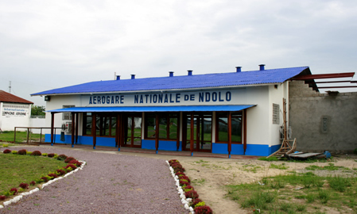

Lettre 1
26 - 10 - 19?7 | Marie Thielens | 3 commentaires

Chers Tous,
Je suis arrivé en excellent état à ’N Dolo , aérodrome de Léo (Léopold ville).
Pour cette nuit je logerai à Guest House Sabena à 1/2 heure de Léo.
Voici quelques impressions du voyage.
I ere étape. Bruxelles - zurich ? zunic ?…
Nous avons quitté Mellsrouk avec un quart d heure de retard. Survolons Charleroi, Lyon, le Rhône, Marseille (mettre une miniature du trajet ?). Une magnifique vue de l’embouchure du Rhone à 1/2 a sec, près de Marseille. Et puis la Méditerranée, ici, catastrophe, coup sur coup 3 orages, ce qui nous a fait dégringoler de 50-100m puis brusquement (regin)? par par 50-100m. A ce train les 3/4 des passagers se sont empressés de visiter les ?jts ad hoc?, cela a duré 1h, 1h1/2 à peu près jusqu’à Tunis que nous avons atteint la nuit tombée avec 1h10’ de retard. A remarquer que ce sport ma prodigieusement amusé, j’ai fumé ma pipe et n’ai rien ressenti, (mais j’étais solidement lié). A tunis ou j’ai envoyé quelques carts (truc de l’époque?) par l’avion de 2 h S.M.T, qui doit ?arriver à Bruxelles à 6h’ du dimanche matin (Une vous l’auriez eue.,) nous avons plantureusement diné avec la bouteille de fumant, des ? saluts ?, pamplemousses oranges et ?raide ? de porc, (sel et poivre) un mets vu pays (que vous pourriez essayer peut-être.) Apres 5h d’escale refilons vers ?Kans?